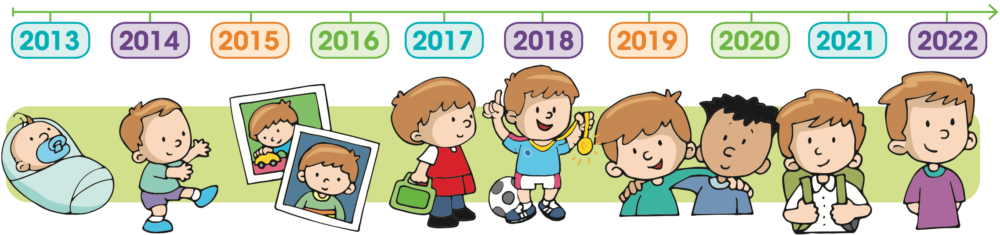

Cuento los años
La línea de la vida / Eclipses y cometas / La vida de los animales
Observa la línea de vida de José y completa la información que se indica. Observa el ejemplo.

1. Soy José y nací en el año
{{(index+2)+'.'}} {{i[0]}}
Observa a las personas y ordénalas escribiendo los números 1, 2, 3, 4 y 5 de acuerdo con su edad, iniciando por la menor.